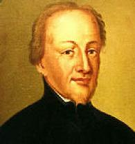

Slavná osobnost: Bohuslav Balbín
| Portrét | Základní údaje | Významné činy | |
|---|---|---|---|
|  | Bohuslav Balbín | Díla: Obrana jazyka českého, Svaté Čechy, Rozmanitosti z historie Království českého, Život arcibiskupa Arnošta z Pardubic | |
| 3. prosince 1621 | 28. listopadu 1688 | ||
| Český literát, historik, hagiograf a pedagog. Jako kněz, člen řádu jezuitů se účastnil rekatolizace, jako vlastenec se ve své době řadil mezi obhájce českého jazyka. Patří mezi nejvýznamnější osobnosti českého baroka. | |||
| Bohuslav Balbín | |||
| Odkaz na wikipedii | |||
Značky a atributy tabulky
- tr
- Vytvoření řady tabulky
- th
- Nadpis kategorie tabulky
- td
- Data jednotlivých buněk tabulky
- colspan
- Atribut zajišťijící rozpětí přes několik sloupců.
- rowspan
- Atribut zajišťijící rozpětí přes několik řádků.
- table
- Značka, která zajistí ohraničení celé tabulky
- thead
- Záhlaví tabulky
- tbody
- Tělo tabulky
- tfoot
- Pata (spodní část) tabulky